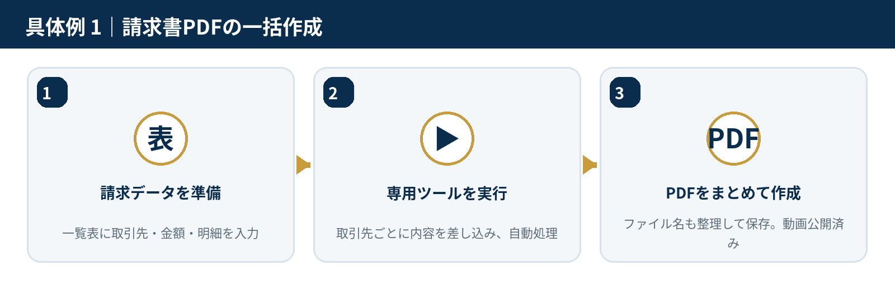
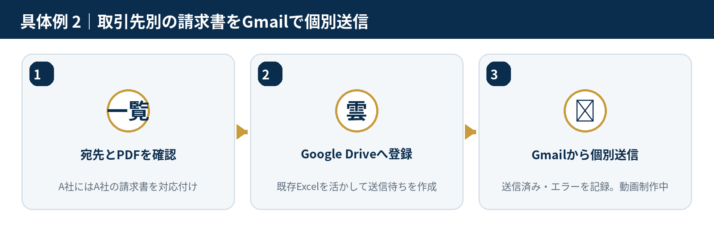
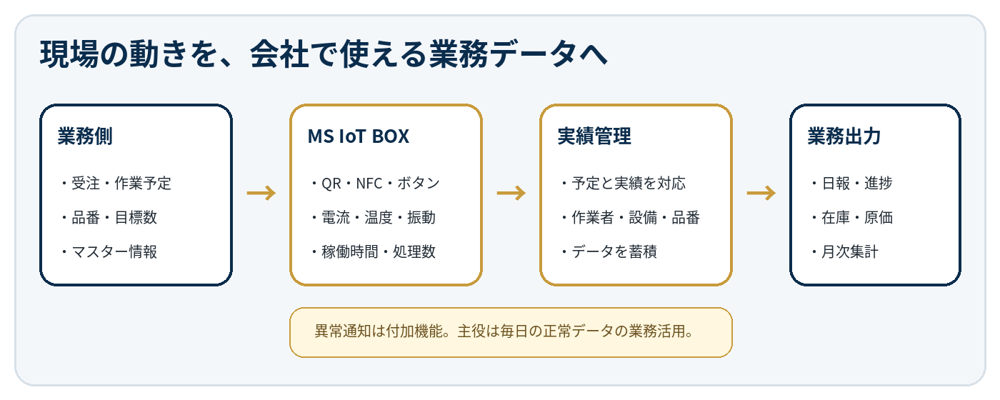

現場改善エンジニア
現場の動きをデータにし、
次の仕事までつなぎます
事務所のExcelやGoogleだけでなく、現場の設備・センサー・QR・ボタンも含めて考えます。作業予定を現場へ送り、正常な稼働データを実績・日報・在庫・原価へ戻す、無理のない仕組みをご提案します。
Problems
PCの作業と現場の動きが、別々になっていませんか？
計算や集計はExcelでできても、現場の実績を人が入力し直していると、手間・遅れ・見えにくさが残ります。
01
作成・送信・保存を人が繰り返している
請求書、帳票、PDF、メールなど、毎回同じ手順をボタン操作や自動処理へまとめます。
02
現場の実績を後から紙やExcelへ入力している
QR、NFC、ボタン、電流・温度などから、作業開始・稼働時間・数量を取得します。
03
予定・実績・在庫・日報がつながっていない
業務側の作業指示と現場データをひも付け、日報・進捗・在庫・原価へ反映します。
Concrete Examples
当面のサービスを、具体的な作業で紹介します
「何ができるか」ではなく、「仕事がどう変わるか」が伝わる例を順次制作しています。

第2弾動画を制作中
作成した請求書を、正しい取引先へGmailで個別送信
Excelの送信一覧で宛先とPDFを確認し、Google DriveとGASを通じて、取引先ごとに異なる請求書を個別送信します。送信済み・エラーも記録します。

新しい開発テーマ
設備の正常な稼働データを、日報・進捗・在庫・原価へ
ExcelやAppSheetの作業指示を現場へ送り、QR・ボタン・電流などから実績を取得します。異常通知だけでなく、毎日の正常データを会社で使える業務データに変えます。
Demo Video 01
まずは完成している1本を
ご覧ください
請求書自動作成は、専用ツールで繰り返し作業をまとめる例です。第2弾では、このPDFを取引先ごとにGmailで個別送信する流れへつなげます。
請求書を作る → 正しい相手へ送る
異なる技術をつなぎ、一連の仕事として改善します。
Main Service
現場課題の整理から、調査・試作・導入まで
相談時に完成案を即答するサービスではありません。現在の作業や使っているファイルを確認し、持ち帰って実現方法を調べ、期限を決めて回答します。
- 経験済みの改善：詳細確認後に見積
- 調査が必要な改善：複数方式と概算を比較
- 精度が不明な改善：小規模な技術検証から開始
業務自動化・専用ツール
Python、Excel VBA、GASなどで、入力・帳票・PDF・ファイル・メール処理をまとめます。
データ蓄積・検索・共有
Excelの履歴表、Googleスプレッドシート、AppSheetなどから規模に合う方法を選びます。
現場データと業務の連携
作業予定・品番・目標数と、設備の稼働・数量・作業時間を結び、日報や在庫へ戻します。
ホームページ・AI活用は補助サービス
ページ制作だけでなく、問い合わせ・フォーム・メール・顧客管理など後ろの業務へつなげます。
Past Experience
過去の改善経験を、簡単なBefore / Afterで
特殊な業務でも、問題の中心は「繰り返し」「待ち時間」「手作業の受け渡し」でした。
検査結果集計
20検査分を手作業でまとめる
ファイルを1件ずつ開き、Excelへ入力
→
一連の操作をまとめ、ワンクリック化
PDF保存
保存のたびに名前入力が止まる
印刷後、終業時にまとめてスキャン
→
保存画面を検出し、連番で自動保存
静かな通知
説明員が出番を予測して待機する
チャイムや電話は会場で音が出る
→
残りスライドを検知し、メール通知
※守秘義務に配慮し、業務の概要のみ掲載しています。
Field Data Integration
MS IoT BOXは、現場の実績を業務へ戻す入口です
センサー値を表示するだけではなく、作業指示と正常な稼働データをひも付け、毎日の仕事へ利用します。
作業指示品番・目標数QR・NFC稼働時間処理数電力使用量
- 業務側から現場へ：作業番号、品番、予定数、納期、作業順
- 現場から業務へ：開始・終了、稼働時間、完成数、電力量
- 自動で作るもの：進捗、作業日報、在庫履歴、原価資料、月次集計
異常通知と生成AIの位置付け
異常通知は安全・損失防止の付加機能です。主役は毎日の正常データの活用です。生成AIは課題整理、方式調査、試作、説明資料作成を速める道具として使います。
開発構想。顧客の業務に合わせて、必要な入力・出力だけを小さく試作します。
Flow
ご相談から改善まで
必要に応じて、了承を得たうえで打ち合わせ音声、PC画面、困っている作業の短い動画を記録し、正確に持ち帰ります。
困っている場面を確認
誰が、何を、何回行い、どこで時間やミスが発生するかを伺います。
持ち帰って調査
今ある仕組みを活かせる方法、代替案、費用とリスクを比較します。
簡易提案
実現方法、期待効果、概算費用、期間、未確定事項を整理します。
必要なら小さく検証
画像・機器連携などは、核心部分だけを試し、成立性を確認します。
試作・導入
範囲を確定し、実際に使いながら調整します。
運用・次の改善
保守、追加機能、蓄積データの活用を段階的に検討します。
録音・撮影は必須ではありません。目的、保存期間、AI利用の有無を説明し、許可された範囲だけを記録します。
代表・現場改善エンジニア
染 真人
Masato Some
Profile
制御・画像処理から、業務自動化・物流現場の社内SEまで
1987年、東京大学工学部計数工学科卒業。同年、富士写真フイルム株式会社へ入社。前半約20年は、機器制御、ファームウェア、画像処理・画像認識・画像計測などの開発を主に担当しました。
その後、医療・内視鏡関連システムのSEや定型作業の自動化に従事。現在は物流会社の社内SEとして、Excel VBA資産の保守・機能追加、GAS・AppSheetによる開発を行っています。
得意な進め方：問題を聞き、制約を整理し、利用可能な技術を組み合わせて小さく試す
現在の技術基盤：Ubuntu、Docker、Node-RED、Grafana、MQTT、ESP32等を学習・構築中
事業の方向：当面は業務改善、将来はIoT・カメラ・AIを組み合わせた現場支援へ
Contact
解決方法が決まっていなくても大丈夫です
「同じメール送信を繰り返している」「現場の実績を後から入力している」「日報・在庫・進捗をつなぎたい」など、困っている場面からお聞かせください。
メールで相談するMSビジネスサポート
代表・現場改善エンジニア：染 真人
〒894-0032 鹿児島県奄美市名瀬伊津部町8-23
Mobile：080-4296-8472
E-mail：masato.some@gmail.com